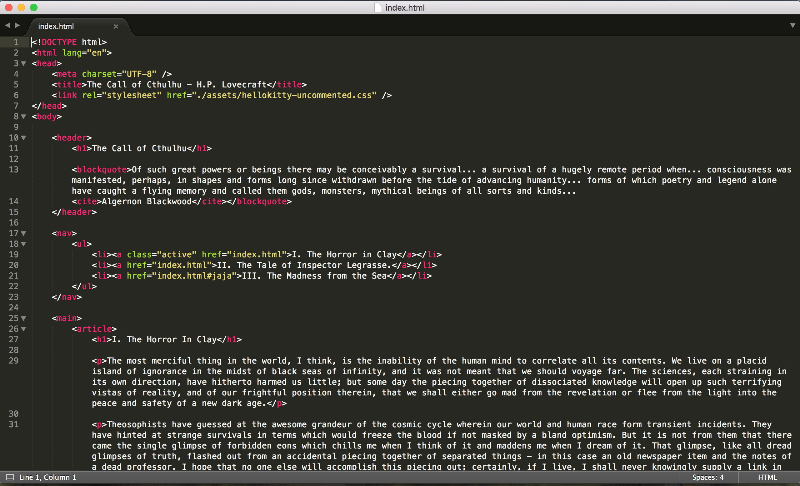

Over ons
Dit zijn wij
In dit allereerste technische vak leer je om interactie vorm te geven met webtechnologie. Je gaat in dit vak content structureren met HTML en dat vervolgens vormgeven met CSS. Uiteindelijk maak je 'from scratch' een volledig werkende interactieve website over een onderwerp naar keuze. Je leert tijdens het ontwikkelen van je website over de geschiedenis en werking van het internet, semantische code schrijven en valideren, bestandsstructuren opzetten en bestanden koppelen, webstandaarden en toegankelijkheid, documentatie raadplegen en je website publiceren op het internet.
Content
Mensen gaan naar websites, mobile apps, games of social media omdat ze iets voor elkaar willen krijgen. Ze komen voor informatie die hun vragen beantwoordt of hen helpt een taak te volbrengen. Door deze vragen en doelen in kaart te brengen, kun je er 'antwoorden' bij bedenken. Je ontwerpt als het ware een gesprek, een conversatie waarin de Tone of Voice leidend is. 'Content = conversatie' is dan ook ons thema. Content is belangrijk bij digitaal interactief ontwerpen. We kunnen alvast zeggen dat het web, mobiele app, game, social media, of welke toekomstige interactieve innovatie ook – zonder content - leeg is. Een goede user experience is dan niet te realiseren. Na afloop van dit vak begrijp je het belang van content voor het vakgebied. We gaan bij dit vak aan de slag met het ontwerpen van de content voor een podcast website. Voordat je hiermee begint zorg je ervoor dat je de theorie begrijpt, toelichten en toepassen.
Vormgeving
Bij Vormgeving ga je leren wat vormgeving is, wat de basiselementen en principes van vormgeving zijn en hoe deze samenwerken in een visueel ontwerp. Je leert bewust kijken naar vormgeving en hoe vormgeving in elkaar zit. Je gaat zelf vormgeven en word je bewust van de werking van vorm, kleur en typografie in een layout. Veel kijken, schetsen en maken is de manier je kennis en vaardigheden als visueel designer te vergroten.
Bij Vormgeving ga je leren wat vormgeving is, wat de basiselementen en principes van vormgeving zijn en hoe deze samenwerken in een visueel ontwerp. Je leert bewust kijken naar vormgeving en hoe vormgeving in elkaar zit. Je gaat zelf vormgeven en word je bewust van de werking van vorm, kleur en typografie in een layout. Veel kijken, schetsen en maken is de manier je kennis en vaardigheden als visueel designer te vergroten.
Overige vakken
Bekijk het volledige curriculum op de website van CMD Amsterdam.
Tips
Als je verwijst naar een andere html-pagina, dan gebruik je een anchor tag zoals hierboven.
Wil je een proces opstarten zoals het versturen van een formulier of het activeren van dark mode dan gebruik je de button tag.
Bij het schrijven van HTML code is goede nestingheel belangrijk!